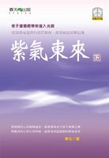

|
|
| 首頁 |
|
 紫氣東來（下） 作者序本文依慣例將老子五千文分成上下兩篇來解讀。老子於道篇中主要講無為觀照，於德篇中講無爭清靜。道篇無為觀照中，講柔弱是道之用，德篇清靜無爭中，講清靜是德之至。 老子講無為觀照時，也講清靜是德之至。老子講無爭清靜時，也講柔弱是道之用。由此可知，道篇中有道有德，德篇中有德有道。老子講超越，不講相對，所以老子所講的道與德是不可分的。老子雖然講，相對矛盾對治法或因緣法都是修行的誤區，老子亦指出，可以方便地利用矛盾的規律與特性來修行，雖然道與德是不可分的一體，亦不妨將道與德以方便的方式分開來講。 本文就是依此來逐漸解讀老子所傳達的無言之教的無為之行，以方便讀者了解領悟與實際修持相結合。 《老子道德經》雖然在國外幾乎家喻戶曉，但在國內卻很少有人在深入研究，更很少有人能領悟《道德經》的實修祕義。《道德經》是老子進入無上之道的親身體驗，但後人研讀的結果，幾乎與真實修行沒有直接關係。人們只是將《道德經》當作一部珍貴的道學文獻，加以收集校對，或進行解讀，將超越的聖典《道德經》解釋成相對法則。 更多的人只知有《道德經》，卻從來沒有看過《道德經》。人們不但不了解什麼是《道德經》，就是其他道經、道書也很少有人翻閱。因此有關道的術語就更陌生了。 中國是道的故鄉，但什麼是道？道在哪裡？如何去成就道？都很少有人去認真研究。人們對道的了解，遠不如對佛教的了解。 由於佛教術語比較普及，所以本文對《道德經》的解讀中，有的是佛教用語，亦有道教用語，更多的是普通用語。用佛教名相來解讀《道德經》，為的是讓人們更容易地深入了解《道德經》中實修的祕密。 聖人們大慈大悲，不辭辛苦救度一切眾生。聖人們在救度眾生中無所得，無親無疏無所分別，那為什麼還有祕密呢？這所謂的祕密，就是文字的有限性所造成的。聖人利用了文字的有限性，以及個人對文字的解讀的隨意性，而使經文的本意，變得模糊不清。聖人就是利用文字模糊的特性，而將無上之法的簡易之行，深深地埋藏在人所共知的語言裡。若能超越文字而解讀聖人的真實教導，那就沒有祕密。若不能超越文字，就會迷失在文字的遊戲中，那麼經文就有甚深祕密。 古代聖人歷來都是密易不密難。修煉中的困難處，多半都用比較準確直接的方式去開示，有時還會從許多角度，立體地去討論這個問題。但比較簡易處，卻常常不講。若講時，也是用一層又一層的隱語、模糊語，有時甚至用反語。這是為什麼呢？實是因為道法珍貴，遇之甚難，能悟之得之更難。 最難的是真實之道找不到真實的修行者。修持之人滿天下，但假者多真者少。不是人們有意要以假充真，而是人們不了解自己的不真實。所以常常不知自己到底想要什麼，不知自己究竟要往哪裡去。 人有時要修行，甚至為了修行可以不惜一切代價。但某一刻又覺得世間也不錯，或者某件事的急迫性大於修行，此時就又不覺得修行重要了。對於如何處理修行與生活常常猶豫不決。 猶豫不決就是人的頭腦最大的特色。而人就是最依靠頭腦的生物。所以人就在是修行好，還是不修行好，二者之間不知如何選擇。即便人們選擇一定要真實修行，也未必就能真實修行。因為修行中有很多誤區。修持者若在誤區中修持，即便有時可以超越頭腦的猶豫不決，也仍然不是真實修行。如此種種就是真實修行者少之又少的原因。 真實修行者少，但說自己是真實修行者的人，卻多到無法計數。無上之道的祕義，若不護持，必將被不真實者盜用。而其盜用者並不是想真實修行，只不過是想利用修道來騙取功名利祿而已。 若如此，真實之道必因被踐踏，而失去真實面貌。那時即便有真實修行者，亦找不到真實大道之法。為了真實的修持者，大道的祕法有時會長期的等待可以繼承者。為此諸佛菩薩善護法城，太上聖人被褐懷玉，以無限的耐心等待勇於荷擔光明者。 在真實的大道祕法之前，所有不真實者都將被自己篩選掉，這就是大道的奇蹟。大道不選擇眾生，大道利益一切眾生，大道之光救度一切眾生。以光明的大道來說，沒有不可救度之人。但當人自己不願被救度時，那大道也沒有辦法。因為大道不是強迫的，大道是自願的。大道留給一切眾生無盡的可能。這是說，作為一個人，你想怎樣選擇人生之路，一切由你自己決定，大道不會干涉。想不想修行，願不願被度的決定全憑自己，這就是所謂的佛度有緣人。 佛度有緣人與度盡無量無數無邊眾生方可成佛這兩句話像似矛盾，其實不矛盾。大道平等，但眾生不平等。大道無來去，但頭腦有來去。當不平等的眾生，以來去的頭腦看大道時，平等的大道已經不平等了。 眾生沉迷於相對法。相對法中本無確定，眾生卻一再地努力希望從不確定的相對法中創造出自己憧憬的確實。 眾生迷戀在相對的因緣法中已太深遠了，因此超越相對的無上之道更加珍貴，所以不論是佛是道，歷來一脈單傳至今。這是為了現今的有緣人。 本文雖然解讀前人所未曾解讀，以利有緣人有入道之機。但本文依然未敢盡洩前人所未洩，以對祕法稍盡護持之責。 為此，本文若有未能盡言之處，敬請海涵。
二OO七年四月 註:本文上冊解讀《道德經》中的無為觀照，下冊解讀《道德經》中的無爭清靜。亦即上冊解讀道，下冊解讀德。在上冊對道的解讀中，有文字解讀與觀照解讀。在下冊對德的解讀中，沒有將文字解讀與清靜無爭的解讀分開，而是採用不斷深入地反復解讀。 |
| 著作權所有 請勿任意轉載 Copyright © 2000-2026 Is Zen Center All Rights Reserved |